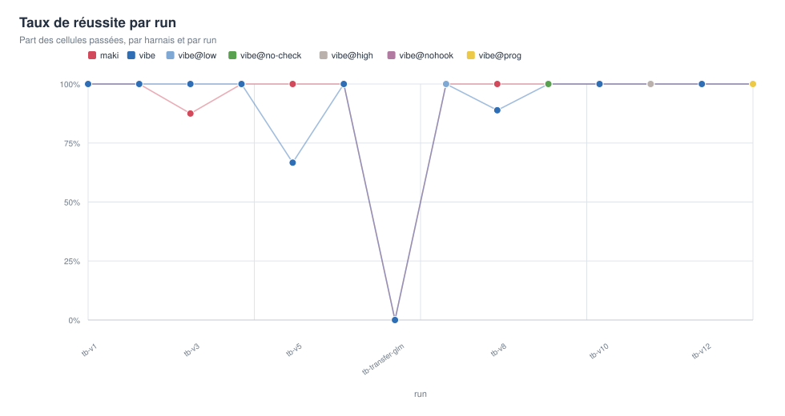
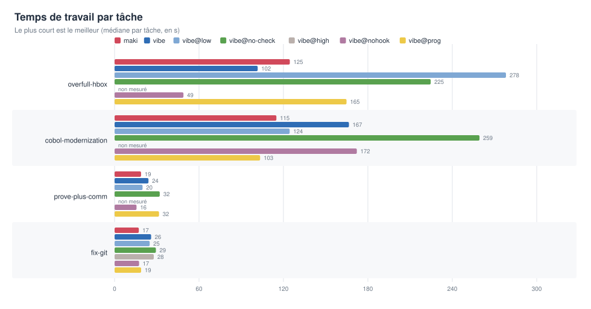
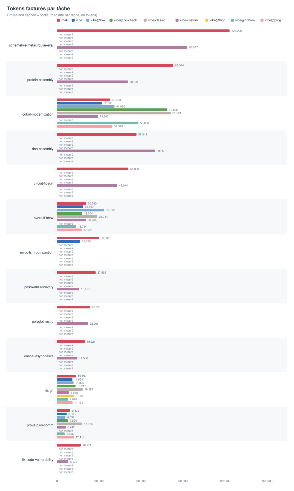
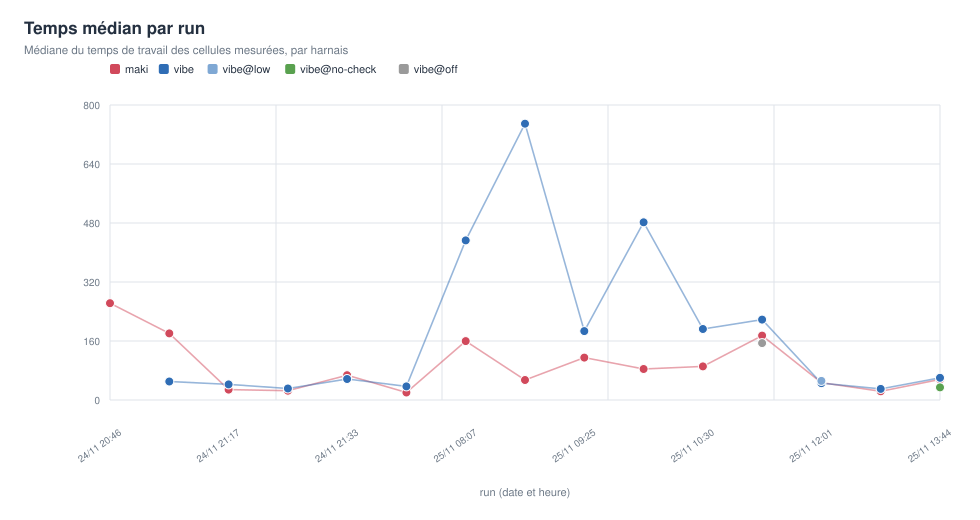
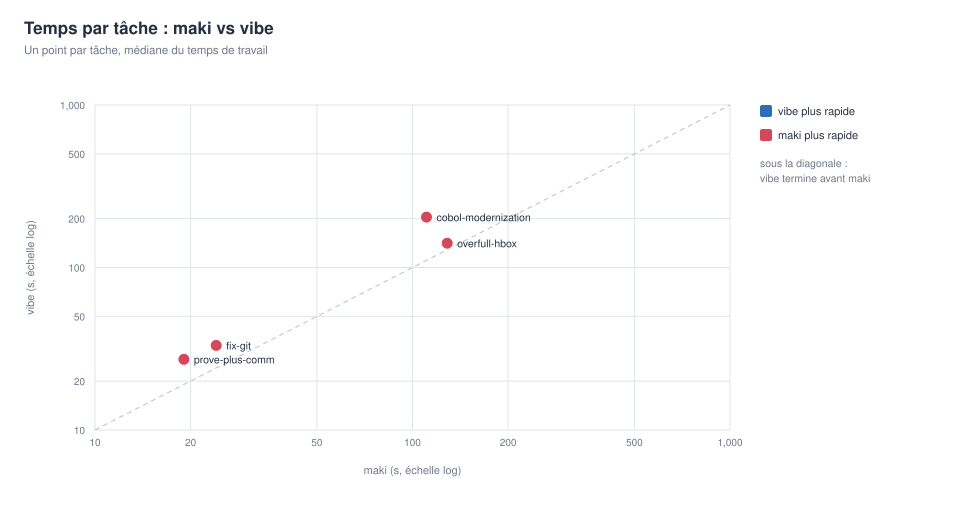

15 runs, du 24/11 20:46 au 25/11 13:44
| harnais | cellules | réussite | temps médian | tokens non cachés | coût médian | tours médians |
|---|---|---|---|---|---|---|
| maki | 71 | 97% (69/71) | 64 s | 25,417 | $0.016 | 16 |
| vibe | 67 | 96% (64/67) | 52 s | 103,066 | non rapporté | 11 |
| vibe@low | 8 | 100% (8/8) | 52 s | 130,695 | non rapporté | 12 |
| vibe@no-check | 7 | 100% (7/7) | 34 s | 66,650 | non rapporté | 10 |
| vibe@off | 2 | 100% (2/2) | 154 s | 1,442,771 | non rapporté | 44 |




